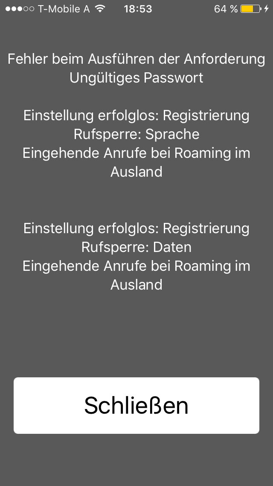

Hallo Zusammen!
Vielleicht findet sich hier ja ein netter Mitarbeiter von T-Mobile
der mir endlich weiterhelfen kann.
Auf meiner SIM-Karte ist seit Jahren eine Anrufsperre für eingehende Anrufe im Ausland bei Roamingbetrieb gesetzt, welche ich nicht aufheben kann, da dass Standardpasswort "5678" nicht funktioniert. Wie beschrieben befindet sich die Sperre direkt auf der SIM-Karte und hat nicht mit den Sperren zu tun welche man selbst in "Mein T-Mobile" administrieren kann!
Diese Sperren konnte man seinerzeit auf allen Handys (zB. bei Nokia Handys, bzw. erster MDA-Compact) aktivieren, als es diese Onlinesperren noch nicht gab.
Vor kurzem wurde auch ein SIM-Kartentausch durchgeführt, dachte das Problem wäre dadurch gelöst, jedoch wurde die Sperre wieder mitübernommen!
Bin schon am verzweifen, weil mir anscheinend niemand helfen kann/will...
Über eine hilfreiche Antwort/Idee wie ich diese Sperre wegbekomme wäre ich sehr dankbar...
Hi,
dazu beziehst dich auf den GSM-Code.
Hier ist der GSM-Code, wie du so eine Sperre deaktivieren kannst:
**351*5678*Dienstecode# - Senden
Der Dienstcode für die Telefonie lautet: 11
Also einfach **351*5678*11# eingeben oder den Dienstcode einfach wegglassen, dann gilt es für alles (Fax, SMS, Daten)
Teil uns dein Feedback mit
")
LG, Armin
PS: Weitere GSM-Codes kann euch Tinka verraten - einfach nach GSM-Code fragen.
Hallo Armin,
Danke vorab für die Antwort - leider bekomme ich die Fehlermeldung dass das Passwort ungültig ist...
Habe schon von anderen Usern gelesen, dass dies durch die Technik zurückgesetzt werden muss.
Bitte um Info ob Du so einen Reset durchführen könntest.
Danke!
Lg Thomas
Hallo
@tfittner
,
versuch bitte mal **351*5678*#. Wenn du weiterhin eine Fehlermeldung bekommst, schick uns bitte einen Screenshot und welches Handy du verwendest.
Danke u. LG Kathi
Hallo Kathi,
Danke für deine Antwort.
Anbei der Screenshoot - ist ein IPhone5.
Es ist jedoch egal auf welchem Smartphone ich den GSM Code ausführe, es kommt immer die Meldung dass das
Passwort falsch ist :-(

LG Thomas
Danke für die Infos,
@tfittner
.
Gerne möchte ich mir das genauer anschauen und auch bei unseren Technikerinnen nachfragen. Sei bitte so nett und schick uns eine private Nachricht über Facebook oder Twitter und sende auch gleich diesen Link mit. Dann können wir dort alle notwendigen Daten abfragen.
Danke dir u. LG kathi
Hallo Kathi,
ich habe weder einen Facebook noch Twitter Account, kann man das nicht anders lösen?
LG Thomas
Alles klar! Schau mal bitte bei deinen Nachrichten rein.
LG Kathi
{kind=link}